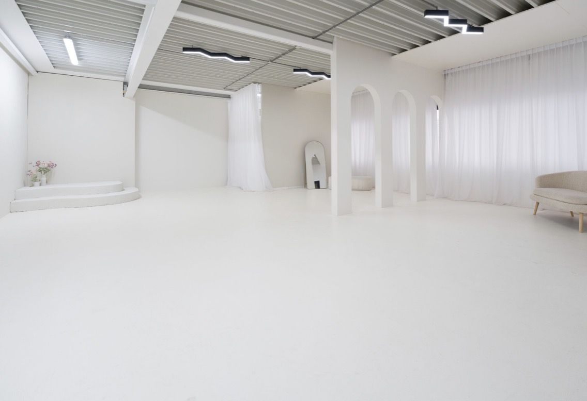

Content & photography on location
We come to you. That's where your story is.
We create your photos and videos where it happens: at your business, at your clients and with your people at work. So everyone sees what your company is really like. Then we crop each image for every channel. Click a format to see the difference.
KIJK62 creates social media content mainly on location: at the business itself, at clients and with staff at work, in Westland, The Hague and the rest of the Netherlands. When a clean backdrop works better, we use our own photo studio in Poeldijk, available to clients by arrangement without studio rental. Every image is delivered in 1:1, 4:5, 9:16 and 1200×627.
 4:5 · Instagram feed
4:5 · Instagram feedWhat we capture
Show how your business really works
No stock photos of smiling people around a meeting table. Your own premises, your clients and your people doing their job instead.
Your business
Your building, office, workshop or shop. The way clients and applicants will see it themselves.
At your clients
Your product or service in use, with the client in the picture. There's no stronger proof.
Your people at work
Colleagues in action, plus portraits for LinkedIn, your website and job ads.
Reels & short clips
During the same shoot we film for Instagram Reels, TikTok and Facebook.
Example: a staffing agency
What a day on location looks like
At a staffing agency it's all about people. So we don't just photograph the office. We also go along to the clients and to the workers in the greenhouses. That way, clients and new candidates see at a glance who you are.
We do the same for an installer on the building site, a nursery between the plants or a restaurant during the lunch rush.
- 1Before
Plan and shot list
We agree with you and your clients where and when we'll visit. Everyone who is recognisable in the shots gives consent in advance.
- 2Morning
At the office
The team, an intake interview, coffee with a new candidate. Plus portraits for LinkedIn and job ads.
- 3Afternoon
At the client's greenhouse
Workers on the job, the team spirit, and the client explaining why they work with you.
- 4After
Selection and cropping
We select, edit and crop everything. Photos and reels go straight into your content calendar.

Our own photo studio
And when the studio works better?
Sometimes a calm, clean backdrop works better: for portraits, product photos or a video where you explain something. Then we use our own photo studio in Poeldijk.
As a KIJK62 client you can use it by arrangement without studio rental. We often combine both: the stories on location, the portraits and products in the studio.
Questions
Questions about content and photography
Can't find your question? Call or email us and we'll explain.
Where does the shoot take place?
Usually on location at your business: in the office, the workshop, the shop or the greenhouse, and where useful at your clients too. When a clean backdrop works better, for portraits or product photos for example, we use our own photo studio in Poeldijk (ABC Westland 259).
Can you just photograph my staff and clients?
No, only with permission. We agree in advance who will be in the shots, and everyone who is recognisable gives their consent. Anyone who doesn't want to be filmed won't be shown recognisably.
Does work stop during the shoot?
No. We move with the rhythm of the day and capture the real work. That also gives the best images: people doing their job instead of posing.
Does using your photo studio cost extra?
As a KIJK62 client you can use our own photo studio in Poeldijk by arrangement, without studio rental. Together we decide where each image works best: on location or in the studio.
Which area do you cover on location?
Mainly Westland, The Hague, Delft, Rijswijk and Zoetermeer. For a good shoot we also travel to other places in the Netherlands.
Which formats do I get?
We deliver every image cropped for 1:1 and 4:5 (feed), 9:16 (reels and stories) and 1200×627 (LinkedIn), so it looks right on every channel.
Can I use the photos on my website too?
Yes. You can use all the images we create for you on your own channels, website, job ads and print.
Book your first location shoot
Book a free intro call. We'll look at your business, your customers and what social media can do for you. No strings attached.